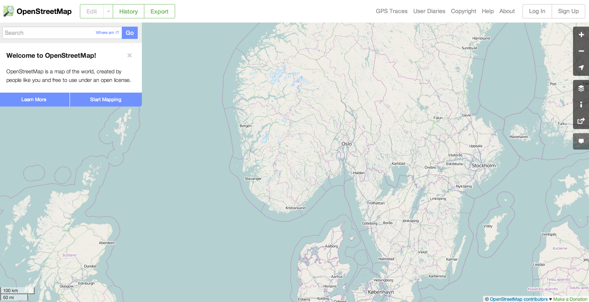
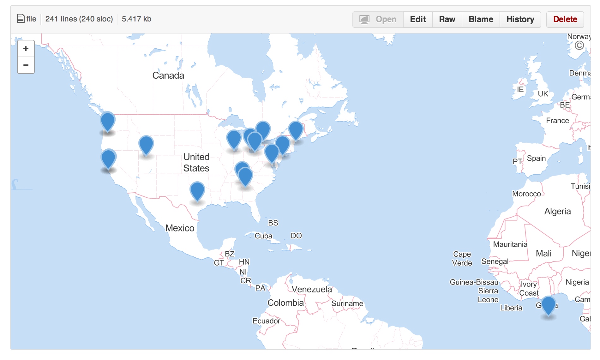
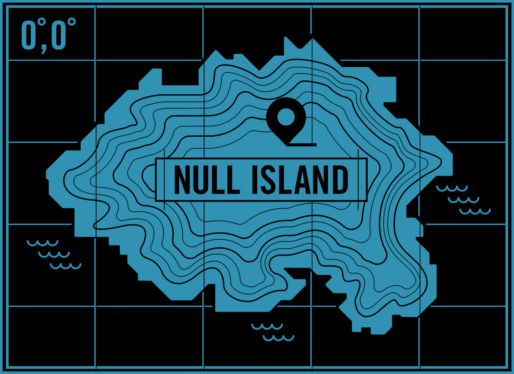

Geography for Web Maps:
The Good, The Bad, and the Stuff You Can Forget
aka,
Intro to Neogeography
I am Camille.
@fulgenteft
These slides are here: ___-
I make stuff at @mapbox
We make software and tools for people to make beautiful custom maps for web + mobile
I teach people about maps @maptimesf
why?
Representation is important
Aesthetics
Open Street Map
I am going to teach you all how to be neogeographers
What is a web map?
It's a map in the browser

slippy map
base layer + data/content/feature layers

data:
{ "type": "Feature", "properties": { "SCALERANK": 2, "NATSCALE": 200, "LABELRANK": 7, "FEATURECLA": "Admin-0 capital", "NAME": "Oslo", "NAMEPAR": null, "NAMEALT": null, "DIFFASCII": 0, "NAMEASCII": "Oslo", "ADM0CAP": 1.000000, "CAPALT": 0.000000, "CAPIN": null, "WORLDCITY": 1.000000, "MEGACITY": 1, "SOV0NAME": "Kingdom of Norway", "SOV_A3": "NOR", "ADM0NAME": "Norway", "ADM0_A3": "NOR", "ADM1NAME": "Oslo", "ISO_A2": "NO", "NOTE": null, "LATITUDE": 59.916690, "LONGITUDE": 10.749979, "CHANGED": 4.000000, "NAMEDIFF": 0, "DIFFNOTE": "Changed scale rank.", "POP_MAX": 835000, "POP_MIN": 580000, "POP_OTHER": 701804, "RANK_MAX": 11, "RANK_MIN": 11, "GEONAMEID": 3143244.000000, "MEGANAME": "Oslo", "LS_NAME": "Oslo", "LS_MATCH": 1, "CHECKME": 0, "MAX_POP10": 731563.000000, "MAX_POP20": 731563.000000, "MAX_POP50": 762374.000000, "MAX_POP300": 762374.000000, "MAX_POP310": 0.000000, "MAX_NATSCA": 100.000000, "MIN_AREAKM": 329.000000, "MAX_AREAKM": 362.000000, "MIN_AREAMI": 127.000000, "MAX_AREAMI": 140.000000, "MIN_PERKM": 340.000000, "MAX_PERKM": 390.000000, "MIN_PERMI": 211.000000, "MAX_PERMI": 243.000000, "MIN_BBXMIN": 10.333333, "MAX_BBXMIN": 10.440355, "MIN_BBXMAX": 11.091667, "MAX_BBXMAX": 11.091667, "MIN_BBYMIN": 59.708333, "MAX_BBYMIN": 59.708333, "MIN_BBYMAX": 60.066667, "MAX_BBYMAX": 60.066667, "MEAN_BBXC": 10.756508, "MEAN_BBYC": 59.906118, "COMPARE": 0, "GN_ASCII": "Oslo", "FEATURE_CL": "P", "FEATURE_CO": "PPLC", "ADMIN1_COD": 12.000000, "GN_POP": 580000.000000, "ELEVATION": 0.000000, "GTOPO30": 11.000000, "TIMEZONE": "Europe\/Oslo", "GEONAMESNO": "GeoNames match general.", "UN_FID": 397, "UN_ADM0": "Norway", "UN_LAT": 59.930000, "UN_LONG": 10.710000, "POP1950": 468.000000, "POP1955": 533.000000, "POP1960": 578.000000, "POP1965": 610.000000, "POP1970": 643.000000, "POP1975": 644.000000, "POP1980": 643.000000, "POP1985": 662.000000, "POP1990": 684.000000, "POP1995": 729.000000, "POP2000": 774.000000, "POP2005": 816.000000, "POP2010": 835.000000, "POP2015": 858.000000, "POP2020": 885.000000, "POP2025": 909.000000, "POP2050": 936.000000, "CITYALT": null }, "geometry": { "type": "Point", "coordinates": [ 10.748033347372314, 59.918636145001869 ] } }
{ "type": "Feature", "properties": { "SCALERANK": 2, "NATSCALE": 200, "LABELRANK": 7, "FEATURECLA": "Admin-0 capital", "NAME": "Oslo", "NAMEPAR": null, "NAMEALT": null, "DIFFASCII": 0, "NAMEASCII": "Oslo", "ADM0CAP": 1.000000, "CAPALT": 0.000000, "CAPIN": null, "WORLDCITY": 1.000000, "MEGACITY": 1, "SOV0NAME": "Kingdom of Norway", "SOV_A3": "NOR", "ADM0NAME": "Norway", "ADM0_A3": "NOR", "ADM1NAME": "Oslo", "ISO_A2": "NO", "NOTE": null, "LATITUDE": 59.916690, "LONGITUDE": 10.749979, "CHANGED": 4.000000, "NAMEDIFF": 0, "DIFFNOTE": "Changed scale rank.", "POP_MAX": 835000, "POP_MIN": 580000, "POP_OTHER": 701804, "RANK_MAX": 11, "RANK_MIN": 11, "GEONAMEID": 3143244.000000, "MEGANAME": "Oslo", "LS_NAME": "Oslo", "LS_MATCH": 1, "CHECKME": 0, "MAX_POP10": 731563.000000, "MAX_POP20": 731563.000000, "MAX_POP50": 762374.000000, "MAX_POP300": 762374.000000, "MAX_POP310": 0.000000, "MAX_NATSCA": 100.000000, "MIN_AREAKM": 329.000000, "MAX_AREAKM": 362.000000, "MIN_AREAMI": 127.000000, "MAX_AREAMI": 140.000000, "MIN_PERKM": 340.000000, "MAX_PERKM": 390.000000, "MIN_PERMI": 211.000000, "MAX_PERMI": 243.000000, "MIN_BBXMIN": 10.333333, "MAX_BBXMIN": 10.440355, "MIN_BBXMAX": 11.091667, "MAX_BBXMAX": 11.091667, "MIN_BBYMIN": 59.708333, "MAX_BBYMIN": 59.708333, "MIN_BBYMAX": 60.066667, "MAX_BBYMAX": 60.066667, "MEAN_BBXC": 10.756508, "MEAN_BBYC": 59.906118, "COMPARE": 0, "GN_ASCII": "Oslo", "FEATURE_CL": "P", "FEATURE_CO": "PPLC", "ADMIN1_COD": 12.000000, "GN_POP": 580000.000000, "ELEVATION": 0.000000, "GTOPO30": 11.000000, "TIMEZONE": "Europe\/Oslo", "GEONAMESNO": "GeoNames match general.", "UN_FID": 397, "UN_ADM0": "Norway", "UN_LAT": 59.930000, "UN_LONG": 10.710000, "POP1950": 468.000000, "POP1955": 533.000000, "POP1960": 578.000000, "POP1965": 610.000000, "POP1970": 643.000000, "POP1975": 644.000000, "POP1980": 643.000000, "POP1985": 662.000000, "POP1990": 684.000000, "POP1995": 729.000000, "POP2000": 774.000000, "POP2005": 816.000000, "POP2010": 835.000000, "POP2015": 858.000000, "POP2020": 885.000000, "POP2025": 909.000000, "POP2050": 936.000000, "CITYALT": null }, "geometry": { "type": "Point", "coordinates": [ 10.748033347372314, 59.918636145001869 ] } }
regardless of what format your data is, there's a lot of (lat,lon) or (lon,lat) coordinates in there
[ -122.7324524, 37.9023387 ], [ -122.7324012, 37.9022282 ], [ -122.7323451, 37.9021191 ], [ -122.7322844, 37.9020117 ], [ -122.732219, 37.9019059 ], [ -122.732149, 37.9018021 ], [ -122.7320746, 37.9017002 ], [ -122.7312819, 37.9006205 ], [ -122.731242, 37.9005806 ], [ -122.7312004, 37.9005417 ], [ -122.7311572, 37.900504 ], [ -122.7311124, 37.9004675 ], [ -122.731066, 37.9004322 ], [ -122.7310181, 37.9003982 ], [ -122.7309688, 37.9003655 ], [ -122.7309181, 37.9003341 ], [ -122.7308661, 37.9003042 ], [ -122.7308128, 37.9002756 ], [ -122.7307584, 37.9002484 ], [ -122.7307028, 37.9002229 ], [ -122.7306461, 37.9001988 ], [ -122.7305885, 37.9001763 ], [ -122.7305299, 37.9001553 ], [ -122.7304704, 37.9001359 ], [ -122.7304102, 37.9001181 ], [ -122.7303492, 37.9001019 ], [ -122.7302875, 37.9000875 ], [ -122.7136174, 37.8964147 ], [ -122.7127163, 37.8996543 ], [ -122.7127335, 37.8996637 ], [ -122.7129412, 37.8997974 ], [ -122.7133378, 37.9000575 ], [ -122.7134057, 37.9001333 ], [ -122.712969, 37.9003811 ], [ -122.7039721, 37.9054847 ]
Latitude and Longitude
This isn't standardized.
It's terrible
Thankfully, we've done away with degrees and points in web mapping
38° 12'
for
38.2
Latitude goes North to South!
it's 90 to 0 to -90
Longitude goes East to West!
it's 180 to 0 to -180
(aka, the long way)
(Lng, Lat) === (x, y)
but wait, isn't San Francisco at [37.5, -122.7]?
Use geojson

Or... topojson
npm install -g topojson
Quick trip to Null Island
(0, 0)
what do I do with this data?
psst-- don't want a slippy map? go play with d3
here and
here
 the first web maps were pretty static
the first web maps were pretty static the tile:
a 256 x 256 square of data
can be a raster (typically png) or vector
zoom 0:
zoom 1:
zoom 2: 16 tiles
zoom 3: 64 tiles
and so on to x^4
zoom 17 === 0.003 degrees
== 1.193 m /pixel === 1:4,000 scale
the tile coordinate system: z / x / y
b.tiles.mapbox.com/v3/camilleanne.tm2-basemap/17/69450/38119.png
 for this party trick of 3D globe --> 2D squares, we need some math
for this party trick of 3D globe --> 2D squares, we need some math
projections!
but don't get too excited, web maps all use the same projection

web mercator.
Web Mercator is the mapping of:
- WGS84 datum (i.e. ellipsoidal) latitude / longitude into Easting / Northing using spherical Mercator equations (where R = a)
- EPSG coordinate operation method code 1024 (Popular Visualization Pseudo Mercator, PVPM)
- EPSG CRS code 3857 WGS84/PVPM (CRS code 3785 is deprecated)
You don't need to remember any of that
except maybe ESPG 3875 (aka 900913) + WGS84
but you'll rarely have to use them, just know they exist and that you want to use ESPG 3875
where might I have to think about projection?
Side note: there was a protocol WMSthat could handle any projection. but it went the way of betamax
So, what is projected? Coordinates.
of course, wrangling data is the hardest part
We really want everything to be geojson, right?
got shapefiles?
(e.g. a bucket of .shp, .prj, .shx, .dbf files?)
ogr2ogr has got your back
brew install gdal
ogr2ogr -f geoJSON muchBetter.json disaster.shp
got a bunch of KML or GPX data?
try togeojson
npm install -g togeojson
togeojson something.kml > somethingBetter.geojson
want to convert client side?
leaflet-omnivore
nom nom
var layer = omnivore.gpx('a.gpx').addTo(map);
Let's make a map, from top to bottom
Base Map